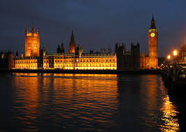

Patrimonio
La capital es la ciudad con más lugares declarados Patrimonio de la Humanidad de la Unesco con Westminster, Greenwich Marítimo, Royal Botanic Gardens Kew y la Torre de Londres. Palacio y Abadía de Westminster e iglesia de Santa Margarita: el conjunto de monumentos forman un conjunto de gran significado histórico y simbólico. El Palacio de Westminster es un gran ejemplo del estilo neogótico y alberga las dos cámaras del Parlamento del Reino Unido (la Cámara de los Lores y la Cámara de los Comunes). La célebre abadía, en la que han sido coronados todos los soberanos británicos desde el siglo XI, es también el lugar donde yacen los restos mortales de Charles Darwin, Geoffrey Chaucer, Lewis Carroll, Charles Dickens, Isaac Newton y una lista interminable de personajes históricos.

Greenwich Marítimo: A tan sólo 20 minutos del centro de Londres, la zona te cautivará por su arquitectura, su historia y sus zonas verdes. Este sitio incluye la Academia Naval de Old Royal (ahora la Universidad de Greenwich), el barco Cutty Sark, y el Observatorio de Greenwich, situado en el Parque Real de Greenwich.
Royal Botanic Gardens Kew: A pocos kilómetros al oeste del centro de Londres podemos encontrar un remanso de paz y tranquilidad en el que disfrutar de un paseo por las más de 120 hectáreas de los hermosos jardines que forman el Royal Botanic Gardens Kew.
Torre de Londres: la imponente fortaleza construida a orillas del Támesis por Guillermo el Conquistador para proteger Londres y reivindicar su poder, es uno de los símbolos más importantes de la monarquía británica, así como uno de los lugares más visitados.